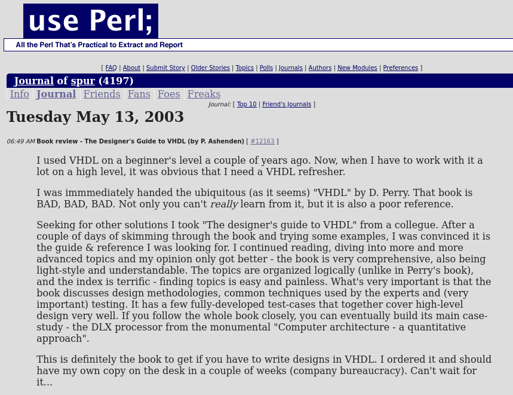
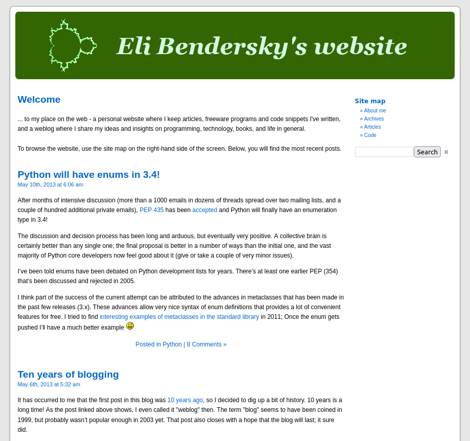

This blog has now been running for 20 years!
Twenty years... a significant chunk of a human's adult life; while so many things in my life have changed since May 2003, the blog has remained a constant companion. This milestone inspired me to do some archaeology using the amazing Wayback Machine. It didn't have the very first post, but I dug up one from just a week or so later - a book review. Here's how it looked on http://use.perl.org/~spur/journal/ (this link is long dead, of course) in May 2003:
When I wrote an update at the 10 year mark, the blog looked like this:
The looks - along with the hosting and the software used to generate and run the blog - changed in September 2014, and the blog has had roughly the current format ever since.
I've made some adjustments to the infrastructure - comments outgrew their usefulness and were turned off in 2018. To further reduce dependencies on third-party services and make the blog faster and more self-contained, blog analytics were switched to use a lightweight self-hosted solution earlier this year. Some infrastructure changes and upgrades have been happening once in a while, but these are completely transparent for readers. Otherwise, it's been going pretty steady.
Downtime has been exceedingly rare, and the blog's serving of static HTML proved to be robust and resilient to spikes - including many HN storms and "hug of death" attempts. This is a great improvement from the previous Wordpress-on-BlueHost approach, which struggled with uptime, especially in times of load.
The blog has been averaging ~25 posts per year in the past 10 years, with something like 100,000 monthly visits. The content has shifted with my interests, from a focus on C++ and Python to more Go content with a mix of Rust and other new technologies like WebAssembly.
As before, big thanks to all my dedicated readers. Reader feedback has always been a highlight of the blogging experience. I have no intention of stopping, but can this blog really reach its 30th birthday? Only the future will tell.